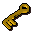
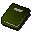
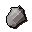
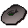
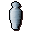
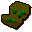
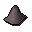
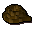

Waterfall
Scripts in
scripts/quests/quest_waterfall/NPCs involved
Items involved

A key
Book on baxtorian
Diamond
Glarials pebble
Glarials urn
Mithril seeds
Rock
RopeInvolvement is derived from identifiers referenced by the quest scripts.